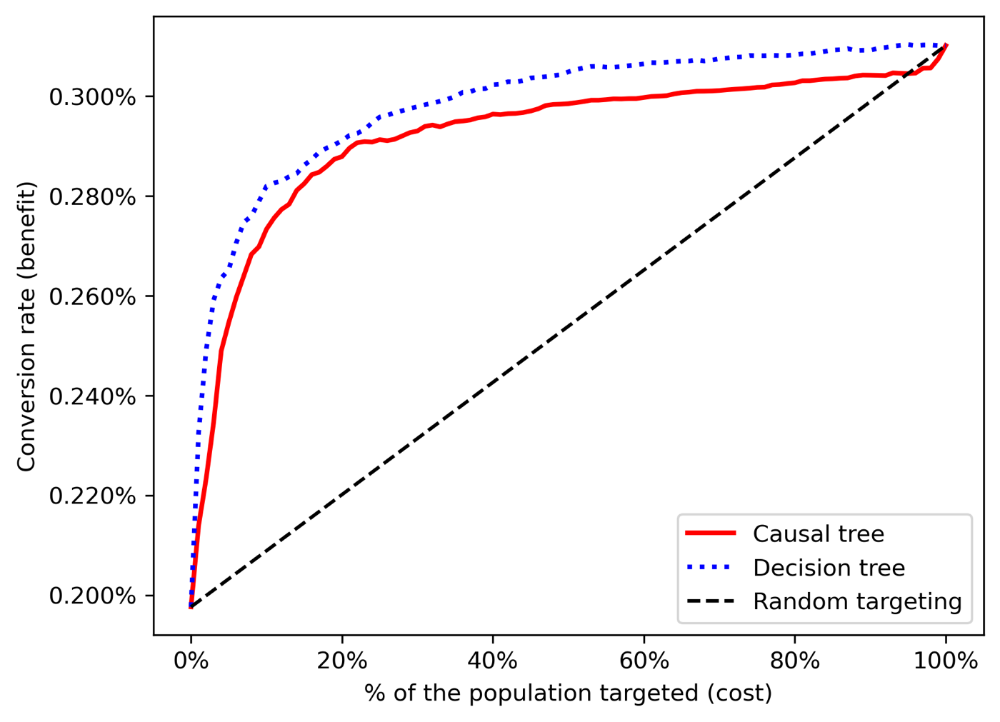

- \(\mathbf{1}(\tau(x) > 0)\)意思決定で推定したいのは効果の大きさ \(\tau(x)\) ではなく、効果がしきい値を超えるかどうかである。
- 学習データは 6 分の 1 以下Criteo の広告データで、広告を出さなかった人だけで学習した非因果の決定木が、因果木と同等以上に効果の大きい人を選んだ（論文 Fig. 3）。
- 5 億件を超えても効果の推定に最適化したモデルと割当てに最適化したモデルの差は、学習データが 5 億件を超えても残った例がある（論文が引く Spotify の事例）。
誰に処置するかを決める問題と、効果の大きさを推定する問題では、推定の対象が違う
論文が扱うのは、ある個人に特定の施策を行う（処置する）かどうかを決める問題である。たとえば解約防止では解約しそうな顧客ではなく、特典によって解約を思いとどまる顧客を選びたい。近年の研究では、機械学習で個人ごとの因果効果を推定し、その推定値で自動的に処置を決める方法が広まりつつある。
潜在結果の枠組みで、処置 \(i\) のもとでの結果を \(Y(i)\) と書く。因果効果の推定（CEE）の推定対象は条件付き平均処置効果（CATE）であり、因果的な意思決定（CDM）の推定対象は最適な処置の割当てである。
下の式は上の式で定義されるので、CATE を推定してその符号で決めればよいように見える。しかしモデルが出すのは推定値であり、誤差を含む。論文は、どの種類の誤差が入るかが判断にとって決定的で、効果をより正確に推定しても判断がよくなるとは限らないと述べる。しきい値は 0 とは限らず、処置の費用と便益を考えれば別の値になる。たとえば購入確率を 1% 以上上げる顧客にだけ配る場合、効果が 1% を超えるかどうかさえ分かればよい。
論文は 2 つの問題の違いをほかに 2 点挙げる。1 つは結果変数の違いで、購入確率への効果が大きい人が、利益への効果も大きいとは限らない。もう 1 つは制約で、予算に上限があり費用が個人ごとに違うときは、CATE の大きい順に選ぶのが最適とは限らない。また、処置を決めながら学び直す文脈付きバンディットとは違い、論文が想定するのは学習済みの方策を固定して使うオフラインの設定である。
効果の推定誤差が小さいモデルが、正しい割当てをするとは限らない
効果を推定する機械学習の多くは、暗黙のうちに効果の平均二乗誤差を小さくしようとしている。一方、割当ての良し悪しは後悔（regret）、つまり最適な処置で得られた結果と、モデルの決めた処置で得られる結果の差の期待値で測る。
図1 は論文 Fig. 1 の例で、真の効果が 0.5 の個人に対して、モデル 1 は 3.5、モデル 2 は −0.5 と予測している。誤差はモデル 1 のほうが大きいが、符号が正しいので「処置する」という正しい判断になる。誤差の小さいモデル 2 は符号を誤り、処置しないと判断する。MSE でモデルを選ぶと、判断の悪いほうを選んでしまう。
割当てを直接最適化する方法として、論文は割当てを重みつき分類に帰着させる方法（Zadrozny 2003、Zhao et al. 2012）を挙げる。最適な処置を目的変数とし、各処置のもとで観測した結果で観測を重みづける。後悔の最小化は重みつき誤分類率の最小化と同じなので、割当ては分類、効果推定は確率推定や回帰にたとえられる。分類の精度がよいモデルが確率の推定もうまいとは限らないことは、予測モデルの分野でよく知られている。
データが無限にあれば、効果を正確に推定するモデルは最適な割当てに収束するので、両者の差は消えるはずである。しかし論文は Spotify のプレイリスト作成を題材にした先行研究で、5 億件を超える学習データでも差が残ったことを紹介している。
交絡で偏ったデータでも、判断には偏りのない実験データと同じくらい、場合によってはそれ以上に役立つ
交絡は効果を推定するうえでは致命的とされる。観測データだけでは偏りの大きさを測れず、データを増やしても偏った値に収束するだけだからである。しかし判断にとって問題になるのは、偏りによって推定値がしきい値の反対側に移るときだけである。図1 でモデル 1 の大きな誤差が交絡のせいだったとしても、判断は損なわれていない。
図2 はある個人について、真の効果 \(\tau\) が判断のしきい値 \(\delta\) を上回る（介入するのが正しい）場合を描く。偏りのないモデル（UM）は費用のかかる実験で集めた小さいデータで学習するので、ばらつきが大きい。偏ったモデル（BM）は自然に集まる大量の観測データで学習するので、ばらつきは小さいが中心がずれている。推定値が \(\delta\) より左に出れば判断を誤るので、\(\delta\) より左の面積が判断を誤る確率になる。
左の図のように偏りが大きく逆向きなら、BM は平均して誤った判断をし、UM のほうがよい。中央の図では偏りが少し小さいだけだが、BM のばらつきの小ささが偏りを補い、どちらがよいかははっきりしない。BM の分布の中心はしきい値の正しい側にあるので、データが増えれば BM も最適な判断に収束する。右の図のように偏りが判断を後押しする向きなら、BM のほうがよい。論文は、広告の効果が「買いそうな人」で大きく、交絡もその人たちで強い場合を例に挙げる。
この点が実務で重要なのは、広告配信や推薦のように、現代の業務システムがもともと交絡したデータを生むように作られているからである。ランダム化実験は処置の費用や機会損失のために高くつき、職業の割当てのように実施できない場合もある。論文は、交絡を補正すると分散が増えてかえって割当てが悪くなりうるとし、この見方は SUTVA の違反、ノンコンプライアンス、実験設計の不備など、交絡以外のデータの問題にも当てはまると述べる。
効果ではなく結果そのものを予測して順位をつけても、同じくらいよく選べることがある
非因果の予測では、真の目的変数ではなく、データの多い代理の目的変数で学習したほうがよいモデルができることがよく知られている。論文は広告や解約防止の実務で効果ではなく「処置後に買うか」といった結果を予測して配る相手を決める慣行を、この代理モデリングとして捉え直す。素朴さや技術不足の表れと決めつけず、代理のモデルのほうが役に立つのかを問うべきだという。
例として、論文は Criteo がランダムに広告を出して集めたデータ（13,979,592 件、特徴量 11 個、処置率 85%）を使う。目的変数はコンバージョンである。比べるのは、広告のコンバージョンへの CATE を予測する因果木と、広告を出さなかったときのコンバージョン確率を予測する非因果の決定木である。どちらも 80% の学習データで交差検証により学習・調整したが、決定木は広告を出さなかった人のデータだけを使った。因果木の学習データは決定木の 6 倍以上ある。
このページの記述と数値は arXiv v3（2021 年 9 月 30 日）の本文による。INFORMS Journal on Data Science 掲載版の本文は自動取得できなかったため、照合していない。

論文によれば、非因果の決定木のほうが、広告の効果が最も大きい人を見つけるのがうまかった。コンバージョンを予測できる特徴量は処置効果も予測でき、しかもコンバージョンのほうが信号対雑音比が高いからだと説明している。理論上はデータが増えれば因果木が上回るはずだが、そのためのデータをランダム化実験で集めるのは高くつく。一方で、負の効果のモデル化が重要な顧客維持などでは、結果予測モデルの成績が悪かった報告もあると注意している。
論文は、結果の予測が効果の推定の代わりになりうる条件を、次の 3 つにまとめている。
- 結果と効果に相関がある。
- 結果のほうが効果より推定しやすい。ある処置のデータが少ない場合や、結果のほうが信号対雑音比がずっと高い場合である。
- 予測を個人の順位づけに使う。上位何 % に介入するなら、スコアが効果の推定値かどうかは関係ない。
効果の推定は判断の評価には重要だが、判断を下すこと自体には必須ではない
論文はランダム化実験や効果推定の手法を否定しているわけではないと断っている。効果の推定は判断を評価するうえで、特に判断の過程に懸念があるときに重要である。著者らは非因果のモデルに基づく方策も含めて、さまざまな割当て方策をランダム化実験で評価するよう実務家に勧めている。
今後の課題として、論文は 4 つを挙げる。1 つ目は、連続的な判断や、同じ個人に時間をかけて複数の処置をする場合まで含めて、予測誤差が判断にどう影響するかを統一的に説明する枠組みである。2 つ目は最適な割当てを学べる条件の数学的な定式化で、たとえば効果が大きいほど選ばれやすい交絡なら、順位は保たれるはずだという。3 つ目は観測データと実験データを組み合わせ、交絡による偏りと学習の誤差のトレードオフを最適化する方法である。4 つ目は、交絡が判断を特に損なう特徴量の領域に絞って実験する、効率的な実験の設計である。
予算制約は定式化していないが、しきい値と順位だけが判断を決めるという見方を示している
この論文は手法を提案する論文ではなく、見方を示す論文（perspective）である。推定の目標に置くのは CATE \(\tau(x)\) ではなく割当て \(a^*(x)\) で、評価には後悔を使う。処置は二値を中心に論じ、複数の処置は多クラス分類に帰着できると述べる。
費用は判断のしきい値に含める形で扱う。しきい値は処置の費用と便益を考えれば 0 以外の値になりうるとし、図2 のしきい値 \(\delta\) も介入する・しないの費用を考えた最適な値として置いている。結果変数を購入にするか利益にするかで判断が変わることも指摘するが、個人ごとに異なる費用をモデルに入れることはしていない。
予算制約は定式化していない。言及は 3 か所にとどまる。まず、予算が限られるときに予測効果の大きい順に配ることを、CEE の典型的な使い方として例に挙げる。次に、予算に上限があり費用が個人ごとに違うと CATE の上位を選ぶのが最適とは限らないとし、CATE を予測してから下流の最適化を解く方法と、制約を学習に組み込む方法を紹介する。最後に、しきい値が予算や人員の制約から決まることもあると述べ、上位何 % に介入するなら順位だけが要るとしている。
（解説者の注）費用 \(c_i\) が個人ごとに違い、総予算に上限があるとき、ナップザック問題の連続緩和では \(\tau_i / c_i\) の大きい順に、予算が尽きるまで配るのが最適になる。このとき判断を決めるのは、比 \(\tau_i / c_i\) の順位と、予算で決まる打ち切りの比との大小だけで、\(\tau_i\) や \(c_i\) そのものを正確に推定する必要はない。論文の「効果がしきい値の上か下か」を「比が打ち切りの値の上か下か」に置き換えた形である。ただし論文はこの場合を扱っておらず、打ち切りの値も推定値から決まるため、推定誤差が順位と打ち切りの両方に影響する点は別に検討が要る。
@article{fernandezloria2022causal,
title = {Causal Decision Making and Causal Effect Estimation Are Not the Same\ldots and Why It Matters},
author = {Fern{\'a}ndez-Lor{\'\i}a, Carlos and Provost, Foster},
journal = {INFORMS Journal on Data Science},
volume = {1},
number = {1},
pages = {4--16},
year = {2022},
doi = {10.1287/ijds.2021.0006}
}